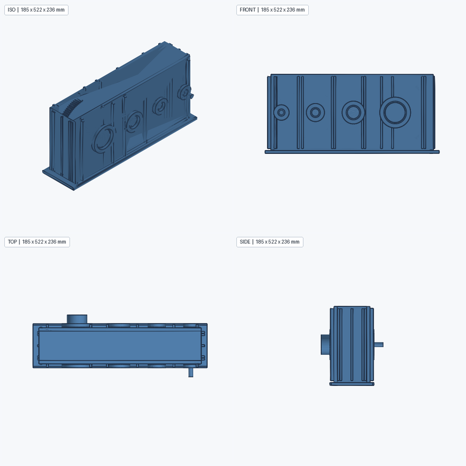
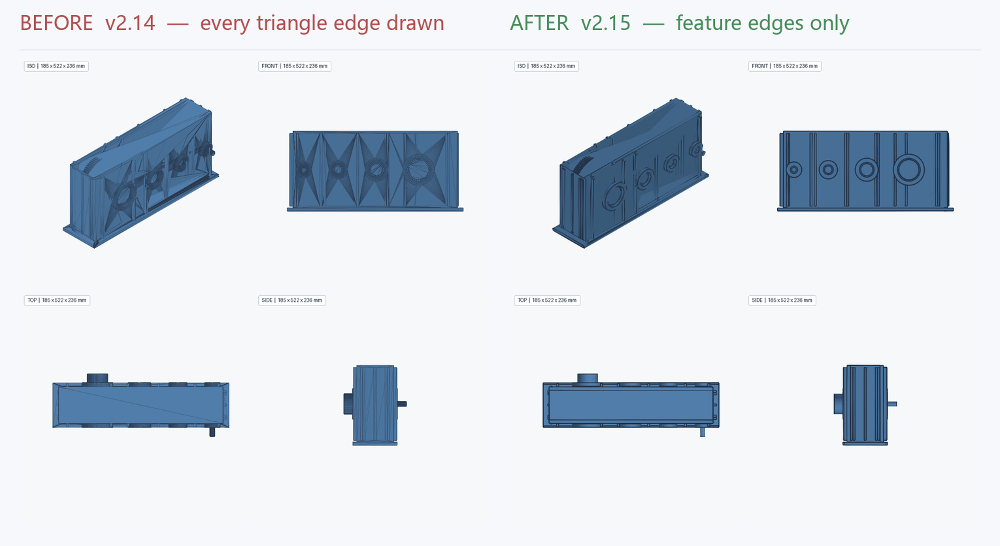
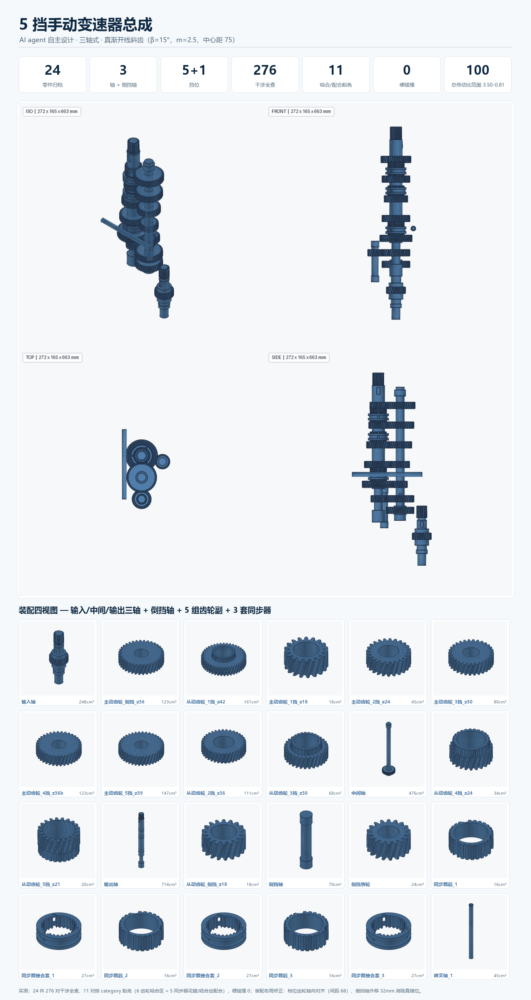
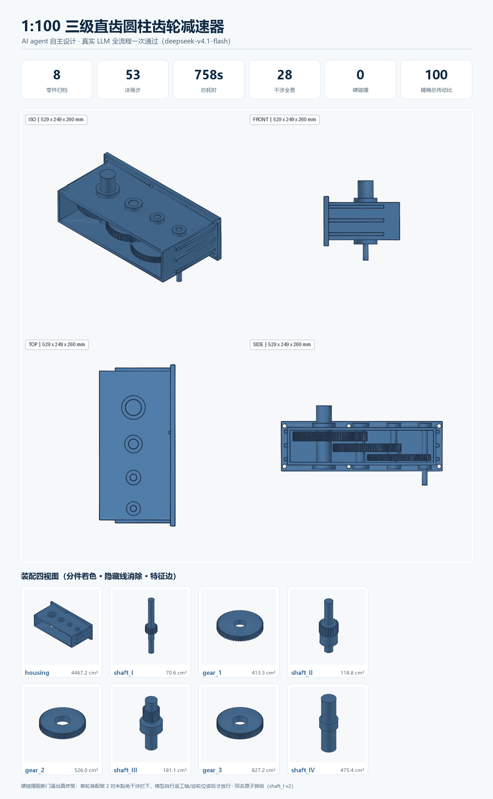
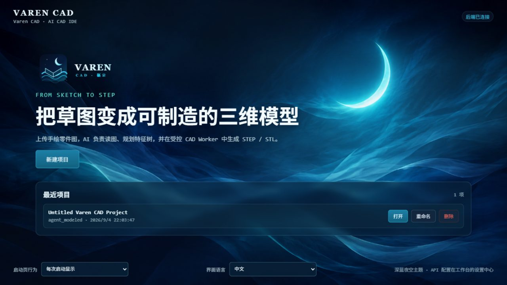
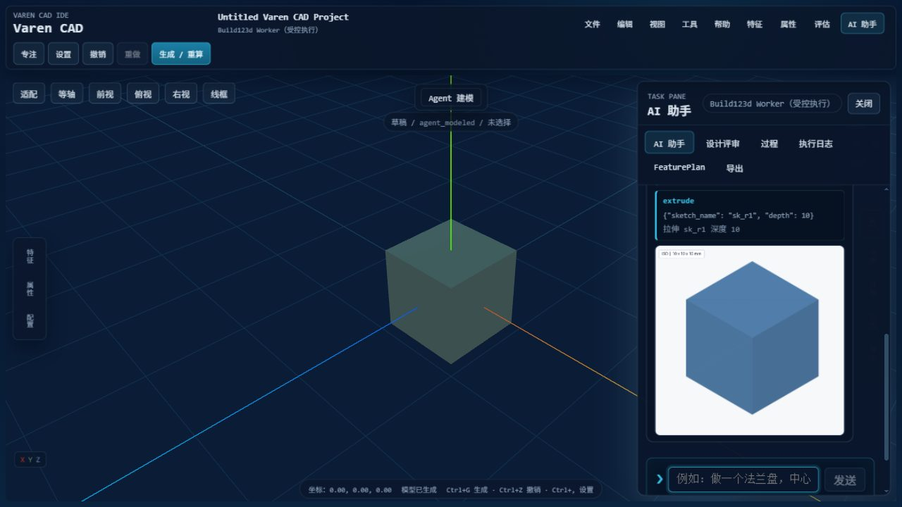

Varen CAD 是面向机械工程师的 AI 建模 IDE。AI agent 像工程师一样逐步自主建模—— 你随时看进度、改参数、确认关键决策，交付参数化 BRep 零件与多实体装配 STEP。
对话式 harness · 真实 OCC 几何 · 可重放特征历史
不是在对话框里等一个答案。Varen 的 agent 先调研、再提问、然后给出零件清单等你批准—— 批准后才开始逐件建模，边做边给你看。
工程计算先行：传动比分级、齿轮副中心距、轴径初估、壁厚经验式
design_calculate关键约束不明确时弹结构化问题卡片（单选/多选/文本）
ask_user给出零件清单（BOM）+ 位姿 + 建模步骤，等你批准
propose_plan → 批准逐件建模归档，收尾出装配 STEP + 干涉报告 + 预览图
export_assembly复杂零件用脚本一次成型，但脚本只能调用内核公开 op——既拿到表达力，又守住"AI 不直接操纵几何"的边界。
箱体、阶梯轴、孔阵列这类多特征零件，模型写一段脚本一次完成，不用几十次原子 op 往返。
背后是真实 OpenCascade 7.9.3 几何（Build123d），不是网格近似，也不是"假装建模"。
多零件按位姿组装成装配体，导出带具名产品节点的 XCAF 装配 STEP，并做全对干涉检查。
输入"给我设计个 1:100 的变速箱"——agent 自主调研、出 BOM 计划、逐件建模、组装交付，全程无人值守。
真实 LLM（deepseek-v4.1-flash）驱动的完整流程：调研 → 提问 → BOM → 批准 → 逐件建模 → 装配导出。最新 v0.16 全流程 53 步 / 758s 一次通过。
内核证据渲染器 v2.15：只画二面角 >30° 的特征边（平面扇形三角化的对角噪声全部消失），OCP 角向细分封顶曲面刻面，crease-aware 平滑法线 + 背面棱剔除 + 掠射压暗。同一装配，前后对比：

同一 harness 一次设计出的三轴式手动变速器：输入/中间/输出三轴 + 倒挡轴，5 对常啮合真渐开线斜齿（β=15°，m=2.5，中心距 75）、倒挡惰轮、3 套同步器（毂+接合套）、换挡拨叉轴。
实测 24 件 / 276 对干涉全查 / 11 对啮合与配合按 category 豁免 / 硬碰撞 0。

1:100 三级减速器的运行总览：8 个归档零件（3 真渐开线齿轮 + 4 阶梯轴 + 箱体）、装配四视图、干涉与传动比指标。

左侧 3D 视口实时渲染内核几何，中间对话式 agent 会话，底部结构抽屉放特征树 / 属性 / 评审 / 过程 / 导出。


Windows 桌面启动，无需 Docker。首次运行会自动构建前端并创建快捷方式。
Python 3.12 venv + 内核仓（真实 OCC 几何依赖 build123d / cadquery-ocp）。
在 .env 填入 planner 模型（OpenAI 兼容端点即可），或在工作台设置中心配置。
双击桌面快捷方式，在右侧 AI 助手输入"做一块 120×120×12 法兰，中心 Ø30 通孔"。
# 1. 克隆两个仓库（IDE + 内核） git clone https://github.com/vanyu0710/aicad git clone https://github.com/vanyu0710/mechcad-kernel # 2. Python 3.12 虚拟环境 cd aicad python -m venv .venv .venv\Scripts\activate pip install -r requirements.txt # 3. 配置 planner 模型（任选 OpenAI 兼容端点） echo MECHCAD_PLANNER_MODEL=your-model >> .env echo MECHCAD_PLANNER_BASE_URL=https://your-endpoint/v1 >> .env echo MECHCAD_PLANNER_API_KEY=sk-... >> .env # 4. 产品模式启动（自动构建前端 + 托盘） .\start-mechcad-pro.cmd # → http://127.0.0.1:8001/
"真正的 CAD agent，不是一次性吐出模型的魔法—— 而是先调研、再提问、出计划等你点头，然后一件一件做给你看。"Varen CAD 设计原则 · 几何主权归内核 · 交付前必复检 · 不造假